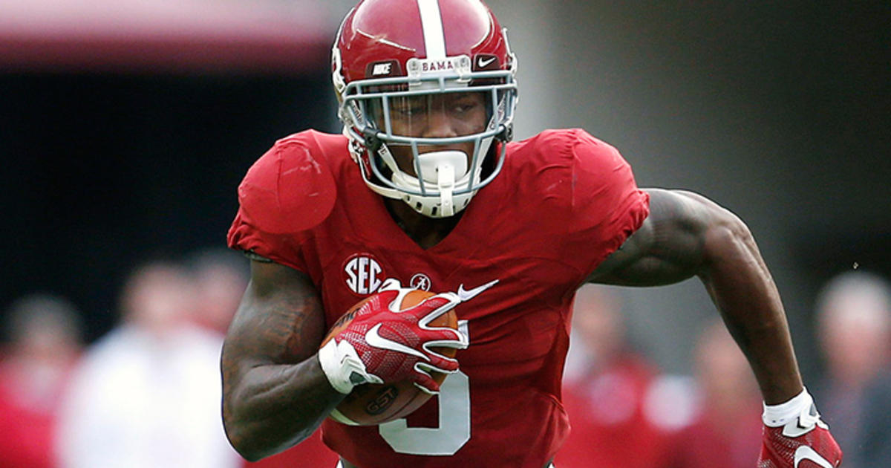

Unpacking the Patriots Draft
My take: Part of the reason the "favorite five" series is put together before the draft is to be accountable when a team picks a player who is identified before the draft as a good fit. The 5-foot-9, 197-pound Jones was one of my favorite five prospects at cornerback for the Patriots because of a combination of four-down value, quickness, toughness and high intangibles. Jones was one of Nick Saban's favorite players at Alabama, and Bill Belichick's respect for Saban, his former assistant with the Cleveland Browns in the 1990s, is well documented...Read more